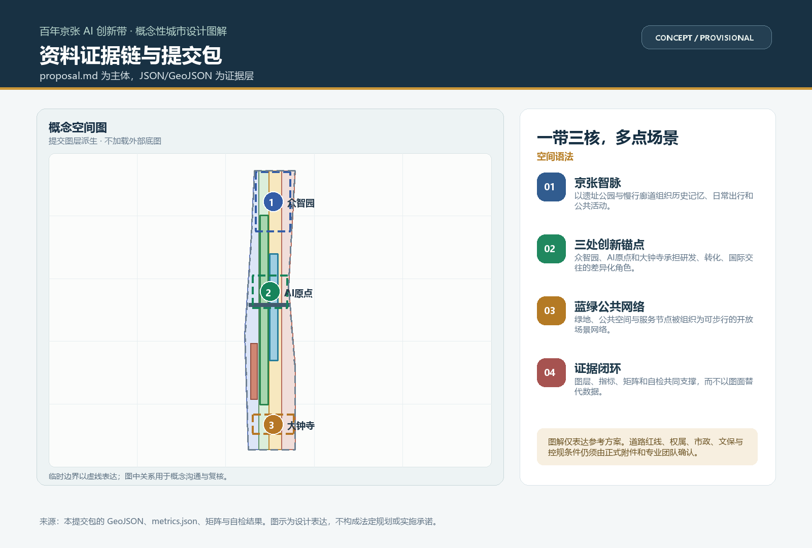
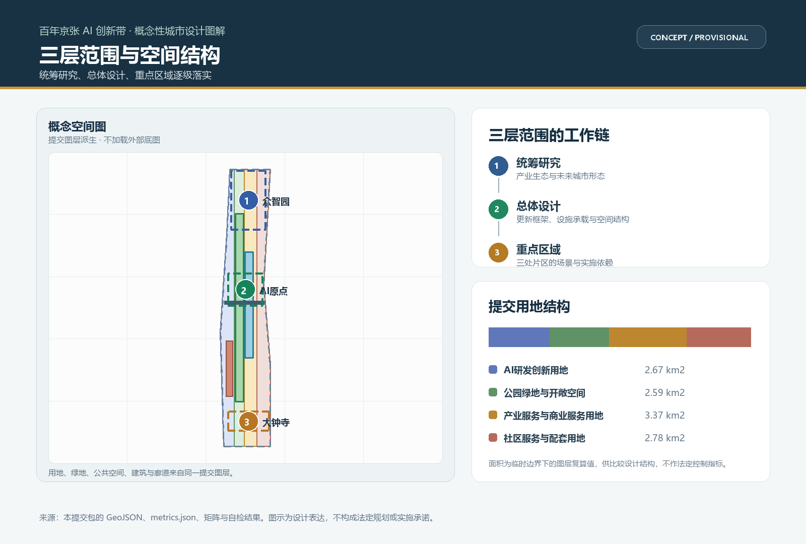
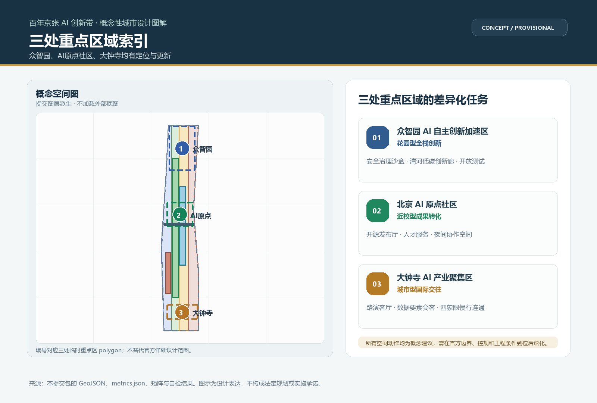
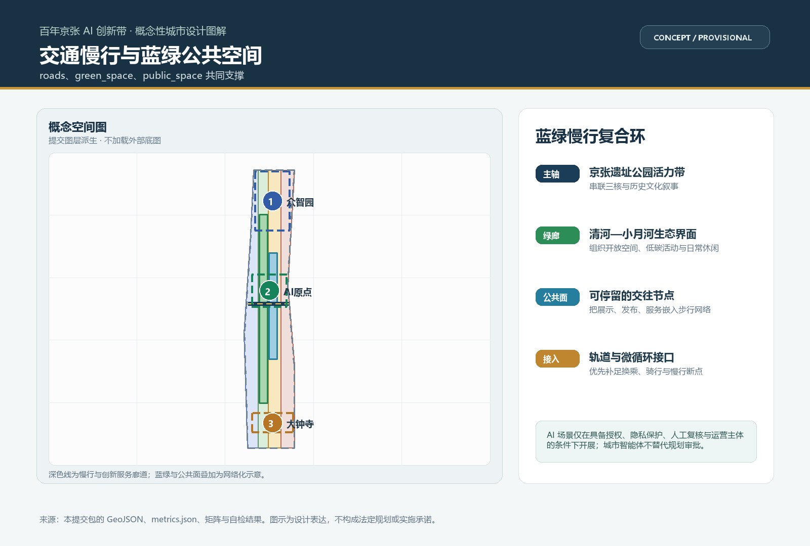
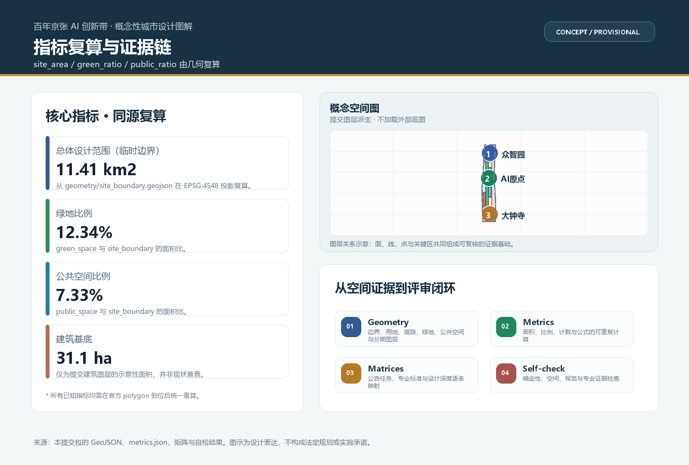

众智园 AI 自主创新加速区
花园型全栈自主创新街区。
- 安全治理沙盒
- 清河低碳创新廊
- 开放测试与展示
FORMAL AI SUBMISSION / JING-ZHANG SYNOIKISM BELT
以京张遗址公园的文化脉络为主轴，以众智园、AI 原点社区和大钟寺为三核，提出可由空间图层、指标与任务矩阵共同复核的概念性协同共生方案。
空间图解直接派生自提交 GeoJSON；设计表述与数据层分工清晰，避免把临时范围误写成法定红线。

统筹研究、总体设计、重点区域逐级把产业生态、更新机制与场景落到可追踪的空间证据。

将高校策源、开源协作、企业转化、公共体验和国际传播组织为长期创新网络。
用地、道路、绿地、公共空间、建筑与分期图层共同构成可复核的概念框架。
众智园、AI 原点社区、大钟寺分别聚焦全栈创新、成果转化和国际交往，并对应六项概念性更新项目。
每个区域均明确定位、空间动作和场景方向，但不替代专业团队基于官方边界、控规和工程条件的深化设计。

花园型全栈自主创新街区。
近校型成果转化与人才社区。
城市型智能经济与国际交往街区。
以京张遗址活力带为主轴，将绿地、公共空间、服务节点、轨道接口和慢行修补组织为复合网络。

以低扰动、可步行的连接方式补足换乘、骑行和公共空间断点。
场景须具备授权、隐私保护、人工复核和运营主体，不将智能体写成审批或执法替代。
所有精确线位、建设时序和工程做法应在官方文件与专业协调后重算和深化。
所有已知指标带有来源文件、公式、置信度和假设；面向评审时，图面只是可读入口，机器可读数据仍是权威依据。

合规矩阵已覆盖公告 1.3、1.4、1.5 的设计任务，以及 agent.1 至 agent.6 的智能体任务书要求。
离线页不加载地图瓦片、远程脚本、字体、iframe 或分析服务。详细来源和假设以 sources.json、assumptions.json 与标准矩阵为准。
项目资料包、公开来源登记、官方公告及面向智能体任务书均在 sources.json 中可追溯。
专业标准响应、设计深度和公告任务通过标准矩阵、深度矩阵与合规矩阵逐项映射。
控规、道路红线、权属、市政、文保和工程条件是正式深化前提，不在本方案中被表述为已获批准。